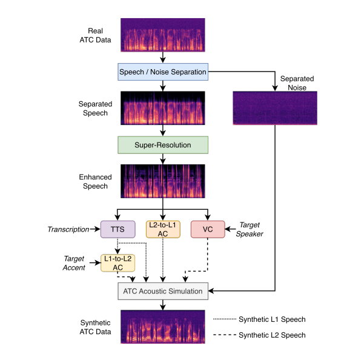

1Université de Lorraine, CNRS, Inria, LORIA, F-54000 Nancy, France · 2National Institute of Informatics, Tokyo, Japan
Each real ATC recording is separated into speech and channel noise, the speech is bandwidth-restored, then re-synthesized through three independent branches, and finally re-mixed with the original noise to keep the ATC channel character.

Pick an utterance to hear every intermediate stage of the pipeline.
If you use this pipeline, please cite the original paper it re-implements:
@article{bagat2026synthetic,
title = {Synthetic Audio Generation Framework for Air Traffic Control Speech Recognition},
author = {Bagat, Raphaël and Zhang, Zhe and Yamagishi, Junichi and Illina, Irina and Vincent, Emmanuel},
booktitle = {Interspeech},
year = {2026}
}